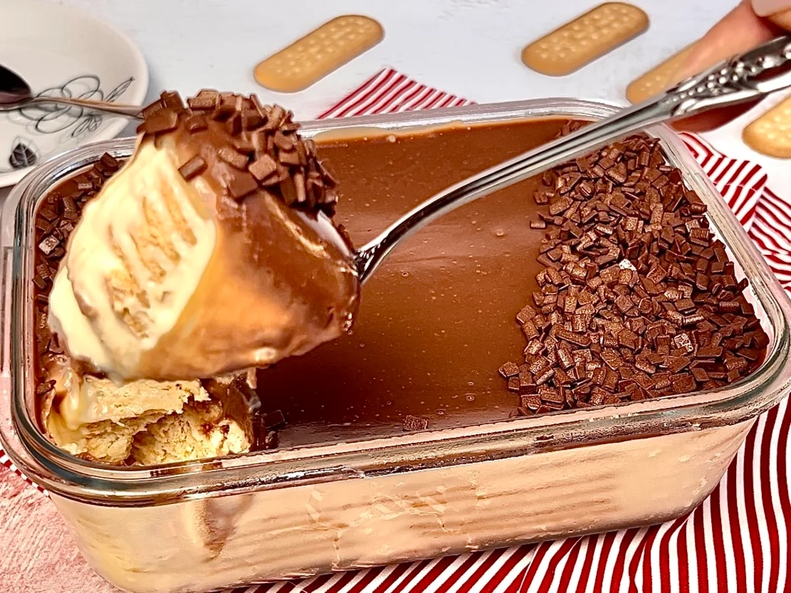

Sobremesas
Palha Italiana
Ingredientes
- 2 latas de leite condensado
- 4 colheres de chocolate em pó
- 1 colher de margarina sem sal
- 1 pacote de bolacha maisena
- 4 colheres de açúcar de confeiteiro
Modo de preparo
-
Em uma panela, coloque o leite condensado,
o chocolate em pó e a margarina.
-
Leve ao fogo médio e mexa até desgrudar
do fundo da panela.
-
Quebre as bolachas em pedaços pequenos
e misture ao brigadeiro.
-
Despeje a mistura em uma forma untada.
-
Leve à geladeira por cerca de 2 horas.
-
Corte em pedaços e passe no açúcar
de confeiteiro.
Pavê de Chocolate

Ingredientes
- 400 ml de leite
- 1 colher de sopa de amido de milho
- 1 lata de leite condensado
- 1 gema de ovo
- 1 caixa de creme de leite
- 1 colher de essência de baunilha
Ingredientes da ganache
- 1 caixa de creme de leite
- 200 gramas de chocolate
Modo de preparo
-
Misture os ingredientes do creme
em uma panela.
-
Leve ao fogo até engrossar.
-
Derreta o chocolate e misture
com o creme de leite.
-
Molhe as bolachas no leite.
-
Faça camadas de bolacha e creme.
-
Finalize com a ganache e leve
à geladeira.